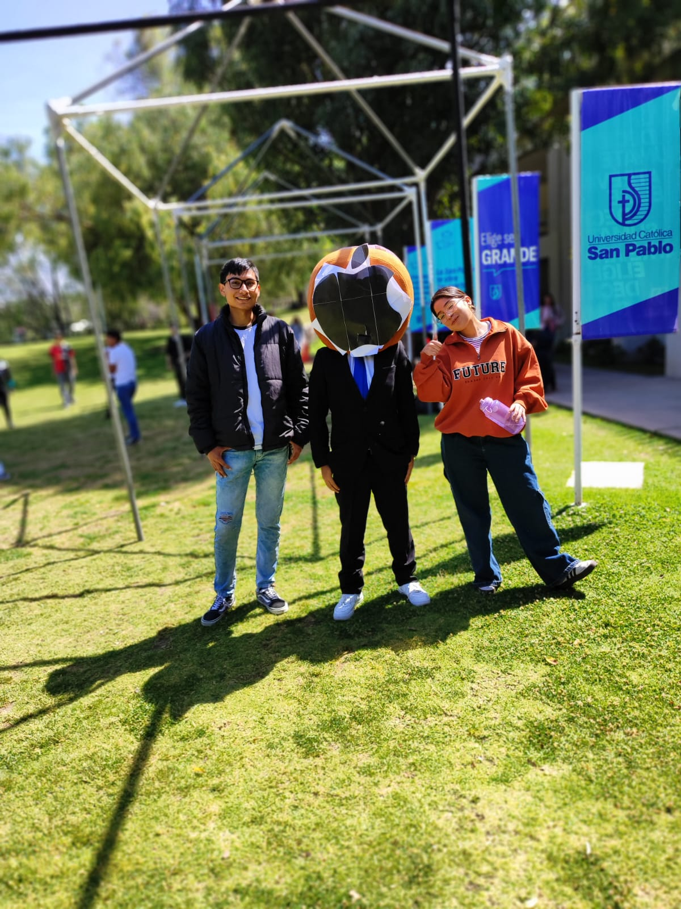

Ronald Joaquin Flores Matheos
Datos
- Nombres: Ronald Joaquin
- Apellidos: Flores Matheos
- Edad: 18 años
- Sexo: Masculino
- Correo Electrónico: ronald.flores@ucsp.edu.pe
- Universidad: UCSP
- Semestre: II
Cursos Universitarios
- Estructuras Discretas II - Prof. Luis Fernando Diaz Basurco
- Introduccion a la ciencia de la computacion - Prof. Ernesto Cuadros Vargas
- Ciencia de la computacion - Prof. Manuel Eduardo Loaiza Fernandez
- Matematica II - Prof. Marco Antonio Cuentas Montenegro
- Introduccion a la Filosofia - Prof. Fernando Alberto Lacunza Murillo
- Apreciacion Musical - Prof. Jorge Lovon Caparo
